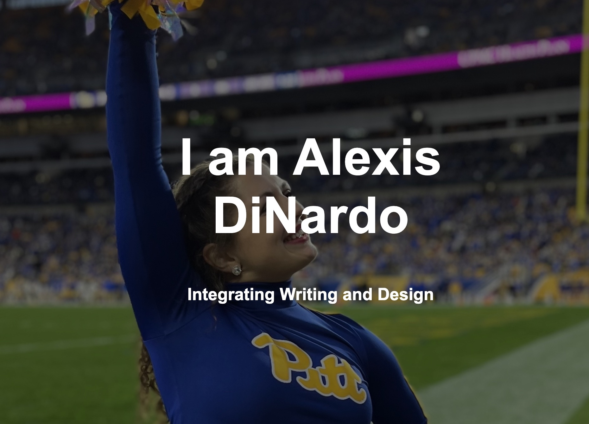
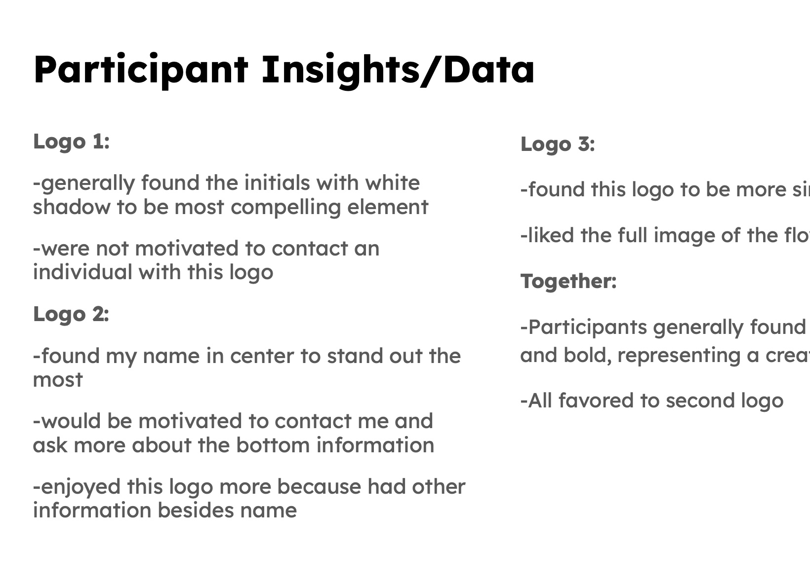

Design Beginnings
Design Fuego

An all about me website, created using HTML, CSS, and a BootStrap template. Here I explain my relationship with design.
Logo A/B/C

Three logos made to represent me, created using three different methods: Canva, Adobe Logo Creator, and creating from scratch.
UX Testing

A study conducted to see which of the three previous logos were considered most liked. I used different UX testing tactics to ask questions and obtain data.
Cartoon Portrait

A cartoon portrait, made using Adobe Illustrator, using an actual photo of me as a base and using different tools to draw over it.
Good Design

A look into what is considered good design, created using Adobe InDesign. Here I look into details of a article color and point out how the designer uses fundamental design principles.